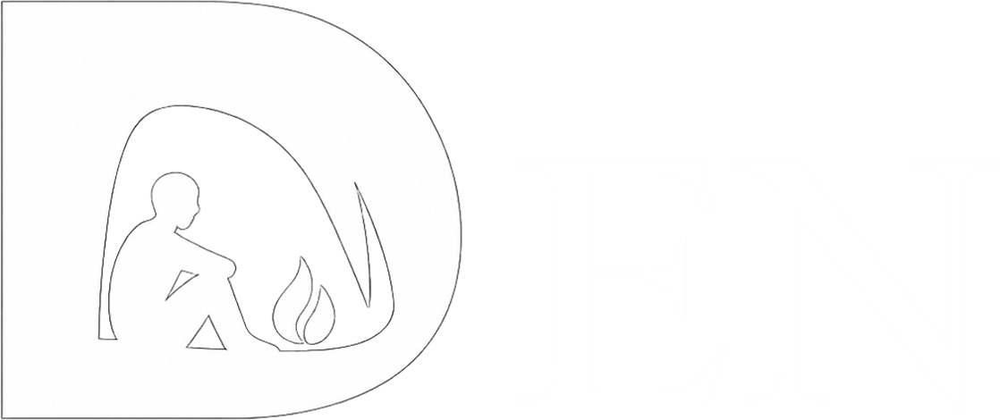

Den 개인정보 처리방침 (베타)
베타 운영 기준 문서입니다. 법률 검토를 거쳐 개정합니다.
- 수집 항목: (가입) 이메일, 소속·사용 목적(선택), 약관 동의 시각 / (서비스 이용) 호출 기록: 시각, 도구 이름, 응답 시간, 응답에 사용한 개념과 지식 항목의 식별자, 질문 주제 분류, 질의 지문(해시), 응답 기록 번호 / (접속 기록) 접속 IP 주소, 접속 시각, 요청 경로 / (den.archi 방문 기록) 방문 시각, 브라우저 식별 문자열, 유입 표지 / (선택 입력) 콘솔 설문 응답, 에이전트가 feedback 도구로 전달한 반응 요약
- 수집하지 않는 항목: 질의 원문, 대화 내용
- 목적: 계정 인증, 가입 안내와 비밀번호 재설정 메일 발송, 서비스 품질 개선(호출 기록 분석), 장애 대응과 부정 이용 방지(접속 기록), 방문 수 집계(den.archi 방문 기록)
- 보존: 이메일은 베타 종료 또는 삭제 요청 때까지, 호출 기록 · 접속 기록 · den.archi 방문 기록은 12개월
- 서버: Den 서비스 서버는 국내에서 직접 운영합니다.
- 제3자 제공: 없음
- 처리 위탁: 메일 발송 Resend(미국), 계정 메일 발송 목적 한정 · 네트워크 전송 Cloudflare(미국), mcp.den.archi 접속 전달 목적 한정 · den.archi 호스팅 GitHub Pages(미국), den.archi 게시 목적 한정
- 권리: 열람·정정·삭제 요청은 support@den.archi로 접수합니다.
세부 조건은 이용약관 · 개인정보 처리방침에 있습니다.
개정 2026-11-17 · 수집 항목 보완(접속 기록, den.archi 방문 기록, 응답 기록 번호) · 표기 정리 2026-11-18